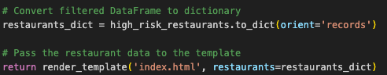
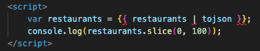
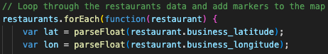

A Map Making Story
Wash your hands, you filthy animal...
We are David, Leo, and Payson and we made a lot of maps.
For this project, we used:
API and CSV to generate data, Python and Pandas to clean data, and SQL to store data and execute queries.
We also used Flask and Jinja, Leaflet and its plugins, HTML, JavaScript, and CSS for styling...
The first thing we did was make a cluster map. It was a nice place to begin because we had a solid example from which to jump.
The scores are color coded on the markers, and we added a search control - a plugin we had not yet used.
The marker here in the story map is relatively arbitrary. It is the latitude and longitude of Benu, a fancy SF restaurant that we used repeatedly to see if the search function worked.
The Leaflet plugin did not allow for searching clustered markers, so we had to create a separate layer of invisible markers to search.
You can check out both the code for the invisible markers and the map itself below.
SF Public Health Data we used contained scores for 809 restaurants.
The marker here is on Lombard St. because it was a long and crooked journey to get this one to work.
Coordinates from inspection score JSON would not plot over the GeoJSON for San Francisco neighborhoods.
The turf library was used to perform spatial calculations. We used two different datasets. One contained the geometry coordinates and the other the point coordinates for the businesses.
Inside the JavaScript code, we used Turf.js to check if the business coordinates fell within any neighborhood's coordinates. This was done using the turf.booleanPointInPolygon function.
Finally, we got our choropleth map up and running, which you can check out by clicking on the button below!
We took the database provided by the SF government for the years 2016-2019 and set up a map to filter data by the year, incident type, and score. In addition, we included a bar graph detailing the number of each inspection type, which updates as the user engages with the filters.
The marker on the story map is the intersection of 16th and Valencia in the Mission, where two restaurants had High Risk incidents and scores under 65.
In this map, like most others, there was a lot of cooperation between HTML, JS, and CSS.
To create the dropdown filters, we defined the handleFilterUpdate function, which is called when a filter dropdown value changes. The function retrieves the selected filter values, applies them to the filterData function to obtain the filtered data, and then calls updateMarkers with the filtered data to update the markers on the map.
Event listeners are attached to the filter dropdowns to trigger the handleFilterUpdate function.
We had some issues with our dropdown menu actually being displayed because, by default, the menu was placed behind the map.
The key was the z-index: 1000 (seen above). It determines the stacking order of elements on the z-axis, which controls their overlapping on the screen. An element with a higher z-index appears in front of elements with lower z-index values.
We did SQL queries to find out which restaurants were the worst!
Over the period of provided data, New Jumbo Seafood (marked on the map) and Sunflower Restaurant had the lowest avg score at 60.5 and 63.5 respectively. Both are still in operation today.
We also used Flask to take the API data and convert it into a DataFrame. Using Python and Pandas, we extracted only the restaurants with recent incidents categorized as high-risk.
First, we rendered the restaurants variable to the template:
Then we called the Jinja variables in HTML while converting it to JSON:
Lastly, we accessed the restaurants variable directly in our script as a normal variable:
Check it out running on a localhost with controls to toggle between a heat map and a traditional marker map with color coded inspection scores.
In our first SQL searches, we found that Lee's had the most high-risk incidents. However, we did not include the business ID, and because Lee's had multiple locations, it seemed worse than it was.
Once we fixed this with a composite key and used both the business name and business ID to filter restaurants, we found that Lee's had 4 locations, with an average score of approximately 83.9.
We still had an issue when accounting for incident counts once we added business IDs.
For instance, Taqueria Cancun, where one of us used to eat a lot circa 2008, had 6 incidents, but it also had the most inspections of any non-school over the period. Once we adjusted for incidents per inspection date, we found that there was only one recorded incident per visit for every foodservice establishment.
School is important, but it doesn't necessarily have the best reputation for good food.
It may not be good, but it is safe.
We found that out of the 379 spots with what we defined as "great" inspection scores (2 or more inspections with an avg score over 92), 49 were schools.
Our queries found that Francisco Middle School with an avg score of 96.4 did the best and is marked on our story map.
In case you are wondering, Tenderloin Elementary did the worst with an avg score of 89.4.
This project and the presentation are entirely contained within our story map, GitHub Pages, and a localhost using HTML, JavaScript, and CSS.
There were a few bugs when we attempted to download the plugin from GitHub, but by saving the webpage directly and then working backwards, loading scripts and playing with the CSS, we got it to work.
A map to present maps felt fitting.
Now, It's All Over Now, Baby Blue.